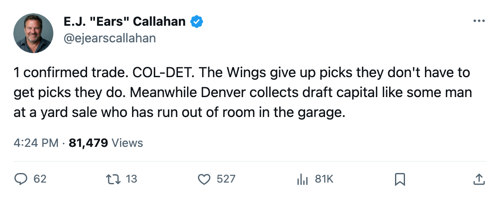
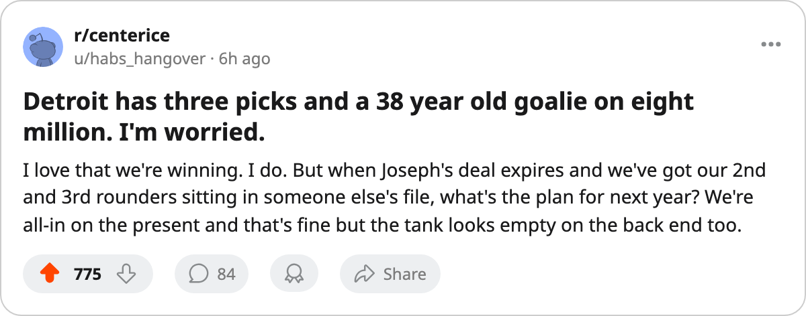

Pick Stockpilers: Colorado Holds 8, Detroit Holds 3. The Only CONFIRMED Trade This Week Went From the Poor to the Rich. 🔥🔥
4 players and 2 picks changed hands between COL and DET. The names are afterthoughts. The asset gap is not.
 E.J. "Ears" CallahanInsider · The Hot Stove
E.J. "Ears" CallahanInsider · The Hot Stove

The asset flow between COL and DET is the story nobody's calling

The league filed exactly 1 confirmed trade between Nov 6 and Nov 9.  Colorado Avalanche and
Colorado Avalanche and  Detroit Red Wings moved 4 players and 2 picks. Colorado holds 8 draft picks across 5 rounds, the most in hockey. Detroit holds 3, the fewest alongside
Detroit Red Wings moved 4 players and 2 picks. Colorado holds 8 draft picks across 5 rounds, the most in hockey. Detroit holds 3, the fewest alongside  Toronto Maple Leafs.
Toronto Maple Leafs.
Detroit holds no rounds 2 or 3
The Red Wings are 8-4-1 with 19 points, 2nd in the Central Division behind  Columbus Blue Jackets. Their payroll runs $63.16M, their cost per point is $3.32M, and that rate is the 6th-best in the league. The roster works. The asset base does not.
Columbus Blue Jackets. Their payroll runs $63.16M, their cost per point is $3.32M, and that rate is the 6th-best in the league. The roster works. The asset base does not.
Detroit's draft capital covers rounds 1, 4 and 5 only. Their 2nd and 3rd round selections sit in Colorado's file, listed on the Bureau's draft ledger. The confirmed window on this week's trade shows 2 more picks crossing between the same two clubs. Detroit has the thinnest future in the league outside Toronto, and Toronto holds 2 Cups to justify theirs.
 Curtis Joseph90, 38, at $8.00M and 90 overall, and
Curtis Joseph90, 38, at $8.00M and 90 overall, and  Manny Legace89, 32, at $1.20M and 90 overall, are both on expiring contracts. Two netminders, $9.20M, and 2 roster spots all clear by July. The front office needs a March answer before it can spend either.
Manny Legace89, 32, at $1.20M and 90 overall, are both on expiring contracts. Two netminders, $9.20M, and 2 roster spots all clear by July. The front office needs a March answer before it can spend either.
Denver buys optionality on a core that expires
Colorado sent Jordan Krestanovich and Arron Asham to Detroit. The filing lists Niclas Havelid and Duvie Westcott in the other direction, with Havelid's name appearing twice, a listing oddity on the transaction sheet. The confirmed window reads 4 players and 2 picks total across the deal.
The Avalanche's payroll is $66.24M against 15 points, $4.42M per point. They are 4-4-3 and 3rd in the Northwest. The desk flagged Denver's contract-year cluster on Oct 13:  Peter Forsberg95 at 89 overall,
Peter Forsberg95 at 89 overall,  Milan Hejduk88 at 82, both at 100 morale on the Bureau's Morale Scale, both on expiring deals. Eight picks give Colorado the choice to re-sign them or move them for more picks.
Milan Hejduk88 at 82, both at 100 morale on the Bureau's Morale Scale, both on expiring deals. Eight picks give Colorado the choice to re-sign them or move them for more picks.
Denver's club average morale sits at 97.0, the 2nd-highest in the league behind  Tampa Bay Lightning at 97.7. Nobody is leaving angry. That is not the same as staying.
Tampa Bay Lightning at 97.7. Nobody is leaving angry. That is not the same as staying.
The pattern hits Round 9 with 0 exceptions
4 contracts were filed between Nov 3 and Nov 5.  Chicago Blackhawks signed a defenseman,
Chicago Blackhawks signed a defenseman,  Vancouver Canucks signed a defenseman,
Vancouver Canucks signed a defenseman,  St. Louis Blues signed a defenseman,
St. Louis Blues signed a defenseman,  New York Islanders signed a winger. Every one is on a body-part list today.
New York Islanders signed a winger. Every one is on a body-part list today.
| Club | Player | Filed | Body Part | Return |
|---|---|---|---|---|
| CHI | Burke Henry70 | Nov 3 | Hand | Nov 17 |
| VAN | Matt Walker69 | Nov 4 | Abdomen | Nov 16 |
| STL |  Tom Koivisto66 Tom Koivisto66 | Nov 5 | Shoulder | Nov 11 |
| NYI |  Mariusz Czerkawski75 Mariusz Czerkawski75 | Nov 5 | Elbow | Dec 7 |
The market is a trickle
The confirmed column reads 1 entry in 3 days. The free-agent pool reads 0 names. What the calendar has as the trade deadline is 130 days away. The trade market is waiting.

